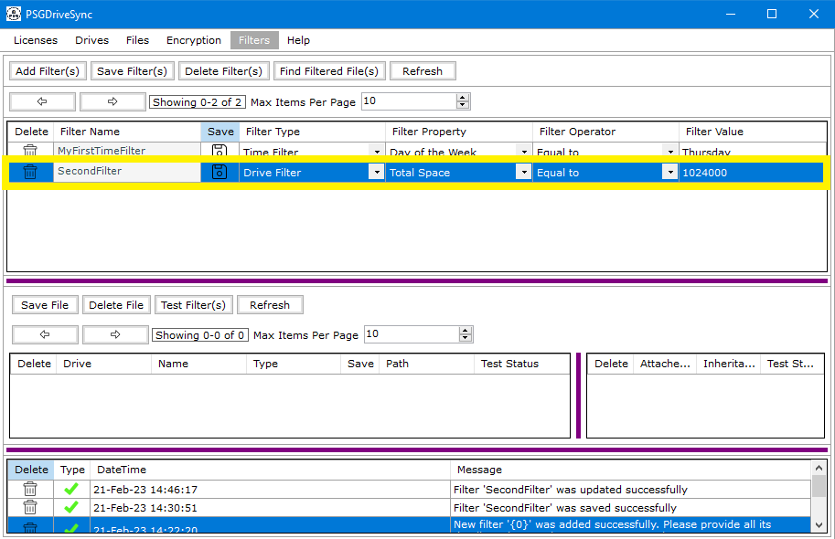
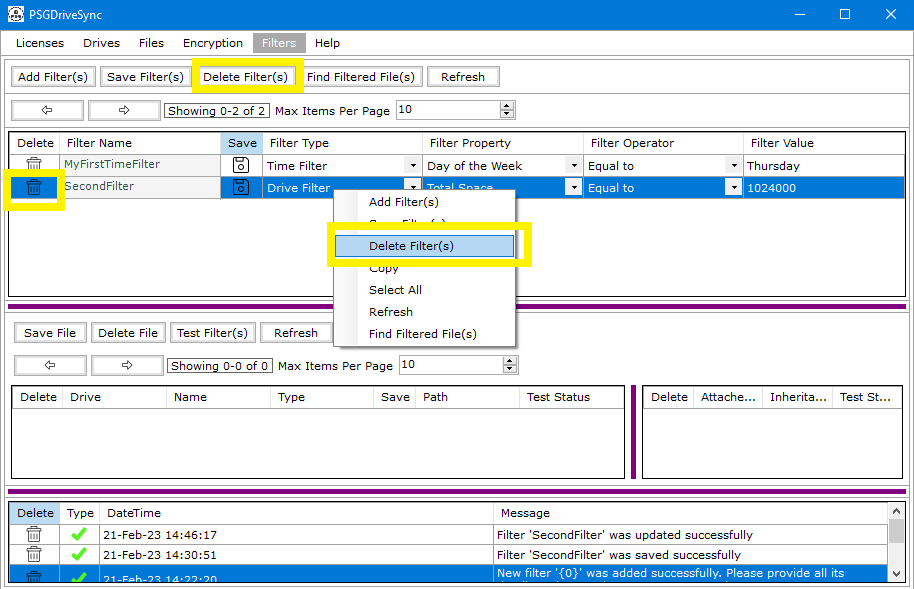
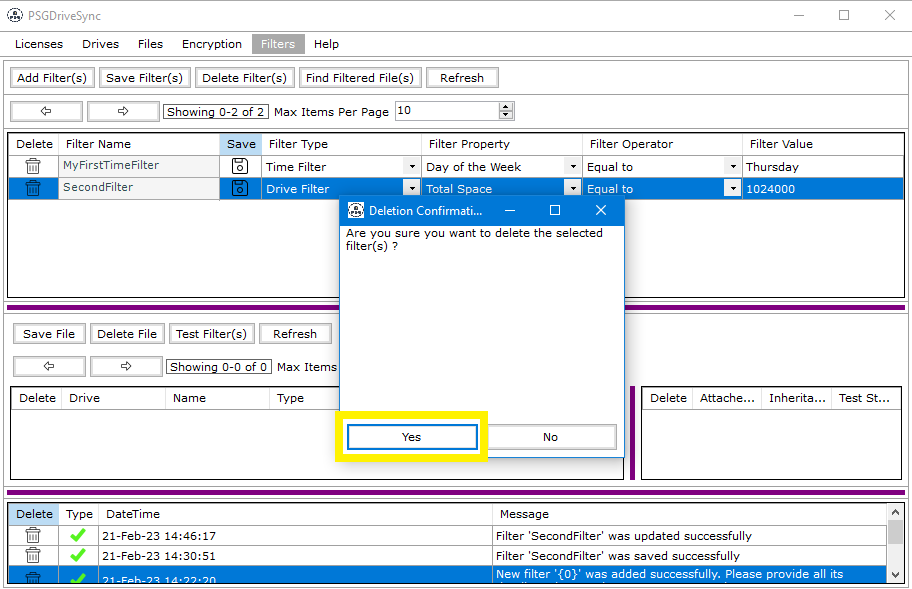
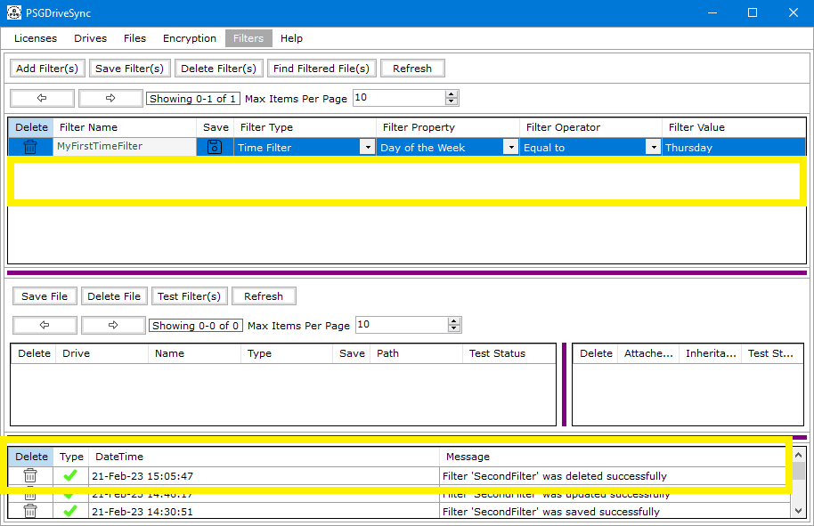

A filter can be deleted at anytime in the "Filters" window as long as there are no filtered files attached to it. if a filter has filtered files attached to it and you try to delete that filter then a warning is generated to let you know that those filtered files are needed to be removed first before the filter can be removed.
|
1 |
Go to the "Filters" window and select the filter that you need to delete. |
 |
|
2 |
Click on "Delete" to delete the filter from the "Filters" window. |
 |
|
3 |
Click "Yes" on the confirmation box. |
 |
|
4 |
The selected filter should not show up anymore in the "Filters" window.Result of the delete operation should show in the message window. |
 |